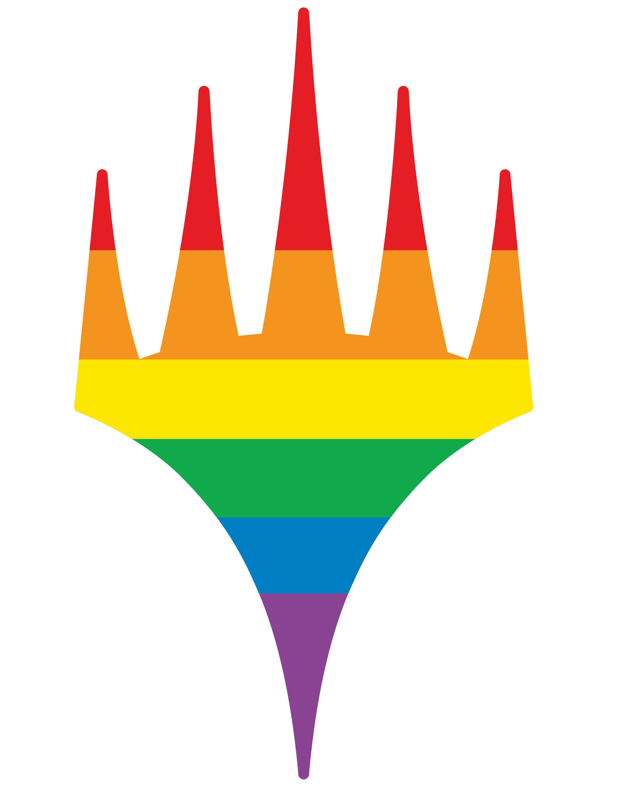

The Colors of  Magic: the Gathering
White
White wants peace through structure.
Positives
- Orderly
- Moral
- Group Focused
Negatives
- Rigid
- Oppressive
- Stifling
 Blue
Blue
Blue wants perfection through knowledge.
Positives
- Logical
- Curious
- Detail Oriented
Negatives
- Cold
- Invasive
- Perfectionist
 Black
Black
Black wants power through opportunity.
Positives
- Pragmatic
- Driven
- Individual Focused
Negatives
- Amoral
- Ruthless
- Selfish
 Red
Red
Red wants freedom through action.
Positives
- Passonate
- Intuitive
- Decisive
Negatives
- Tempermental
- Irrational
- Impulsive
 Green
Green
Green wants growth through acceptance.
Positives
- Content
- Grounded
- Wise
Negatives
- Slow to Act
- Detached
- Curmudgeonly
White
vs
Black
The good of the group vs the good of individual.
White's Perspective
Good vs Evil
Black's Perspective
Idealism vs Pragmatism
Blue
vs
Red
Driven by Logic vs driven by Emotion.
Blue's Perspective
Rational vs Irrational
Red's Perspective
Manipulative vs Honest
Black
vs
Green
Red
vs
White
Green
vs
Blue
Resources
- White: The Great White Way Revisited
- Blue: True Blue Revisited
- Black: In the Black Revisited
- Red: Seeing Red Revisited
- Green: It's Not Easy Being Green Revisited
- Enemy Colors: Pie Fights
- Ally Colors: Thank You for Being a Friend